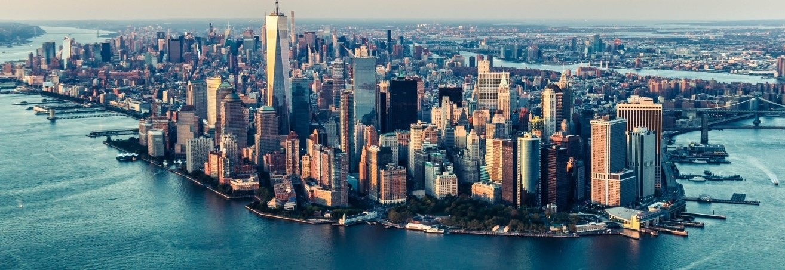

New York
General Information
New York City:

New York, the city that needs no introduction, is a place of infinite energy,
creativity, and diversity. Often called "The Big Apple" or "The City That Never Sleeps,"
this iconic megacity has captivated millions of people around the world.
From skyscrapers and world-famous landmarks to a bright cultural scene
and a rich history, New York City is a true wonder. In this blog post,
we'll explore the city that never sleeps.
Sightseeing
The statue of liberty:

- Statue of Liberty: This colossal symbol of freedom welcomes visitors to New York Harbor.
Take a ferry to Liberty Island to get up close and explore the statue and the accompanying museum.
- Times Square: Known as "The Crossroads of the World," Times Square is a dazzling hub of entertainment,
billboards, and bright lights. It's the perfect place to experience the city's energy.
- Central Park: Escape the city's hustle and bustle by strolling through the sprawling Central Park.
It's a serene oasis with ponds, bridges, and plenty of greenery.
- Empire State Building: Ascend to the top of this iconic skyscraper for breathtaking panoramic views
of the city's skyline.
- Brooklyn Bridge: Walk or bike across this historic bridge for stunning views of both Manhattan and
Brooklyn. The bridge's architecture is a marvel in itself.
- Broadway: Catch a world-class theater performance on Broadway. The neon marquees and
talented casts make for a memorable night out.
- 9/11 Memorial & Museum: Pay your respects at the poignant 9/11 Memorial, which commemorates
the tragic events of September 11, 2001. The museum provides a detailed account of the day's events.
- Chinatown and Little Italy: Explore these vibrant neighborhoods for a taste of diverse
cultures and delectable international cuisine.